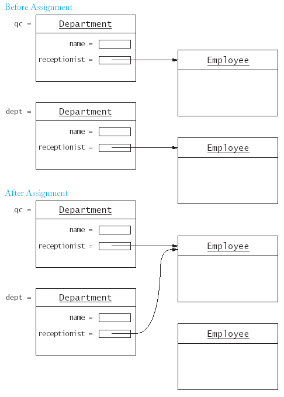

// department0.cppПроменяме конструктора на класа, като там конструираме обект - член-данна на класа.
#include <string> #include <iostream> using namespace std; #include "ccc_empl.h" /**
A department in an organization. */ class Department { public: Department(string n); void set_receptionist(Employee* e); void print() const; private: string name; Employee* receptionist; }; /** Constructs a department with a given name. @param n the department name */ Department::Department(string n) { name = n; receptionist = NULL; } /** Sets the receptionist for this department. @param e the receptionist */ void Department::set_receptionist(Employee* e) { receptionist = e; } /** Prints a description of this department. */ void Department::print() const { cout << "Name: " << name << "\n" << "Receptionist: "; if (receptionist == NULL) cout << "None"; else cout << receptionist->get_name() << " " << receptionist->get_salary(); cout << "\n"; } int main() { Department shipping("Shipping"); Employee* harry = new Employee("Hacker, Harry", 45000); shipping.receptionist(harry);
Department qc("Quality Control");
Employee* tina = new Employee("Tester, Tina", 50000); qc.set_receptionist(tina); tina->set_salary(55000);
shipping.print(); qc.print();
delete harry;
delete tina;
return 0; }
class Department {
...
private:
string name;
Employee* receptionist;
};
Department::Department(string n, Employee e)
{
name = n;
receptionist = new Employee(e.get_name(), e.get_salary());
}
/* second constructor */
Department::Department(string n)
{
name = n;
receptionist = NULL;
}
department1.cpp
С операция new в конструктора на класа се създава
обект, данна на класа.** Деструктор
Деструктор е специална член-функция, която се извиква автоматично
когато обектът излезе от обхват (out of scope).
Деструкторът на класа Department
унищожава създадения от конструктора обект.
department2.cpp
** Предефиниране на операция присвояване
Нека имаме следните дефиниции:
Department qc("Quality Control", Employee("Tester, Tina", 50000));
Department dept("Shipping", Employee("Hacker, Harry", 35000));
и след това приложим операция присвояване, която е дефинирана за
всеки клас (и се нарича почленно копиране):
dept = qc;
1. Това присвояване води до загуба на памет (memory leak) - имаме
недостъпен обект (от тип Employee)!

2. Когато един от обектите (qc
или dept) излезе от обхват (и
изтрие обекта), получаваме висящ указател (dangling pointer) -
указател към изтрит обект!
department3.cpp
За да избегнем това, е необходимо да направим копие на обекта от
клас Employee (с адрес от обекта
qc) и да поставим адреса на
копието за стойност на полето receptionist.
Това може да се направи като предефинираме операция присвояване за
обекти от класа Employee.
Department& Department::operator=(const Department& b)
{ if (this != &b)
{ name = b.name;
delete receptionist;
if (b.receptionist == NULL) receptionist = NULL;
else
receptionist = new Employee(b.receptionist->get_name(),
b.receptionist->get_salary());
}
return *this;
}
- Променяме данните, които не са указатели (в случая name) от обект b
в обект *this;
- Изтриваме указателя receptionist
от *this (текущия обект) и
- Създаваме нов обект от тип Employee
за *this, копие на обекта *receptionist
от параметъра (десния аргумент на операцията) b.
Функцията за предефиниране задължително трябва да е член-функция
(защо?).
department4.cpp
** Конструктор за копиране
Предназначението на операция присвояване е да промени съществуващ
обект, като го направи същия като друг обект и не е подходяща за
конструиране на нов обект.
Например в оператора за дефиниране на обект:
Department dept = qc; // not assignment operator!
не може да се използва (и не е!) операция присвояване.
Правилното конструиране на обект, копие на друг обект е:
Department dept(qc);
т.е. като се извика конструктор за копиране.
За всеки клас в езика С++ има (по подразбиране) такъв конструктор,
но той действа с почленно копиране и възникава същия проблем,
както при операция присвояване.
Решението е да се напише конструктор за копиране:
Department::Department(const Department& b)
{ name = b.name;
if (b.receptionist == NULL) receptionist = NULL;
else
receptionist = new Employee(b.receptionist->get_name(),
b.receptionist->get_salary());
}
Конструктор за копиране се вика и когато се предава
параметър-стойност на функция, напр.
void print(Department d)
{ ... }
Department dep("Administration")
...
print(dep);
....
Пример:
// department.cppКогато използваме указатели (и динамична памет) в данните на клас, винаги трябва да дефинираме "големите три":
001: #include <string> 002: #include <iostream> 004: using namespace std; 005: 006: #include "ccc_empl.h" 008: /** 009: A department in an organization. 010: */ 011: class Department { 013: public: 014: Department(string n); 015: Department(string n, Employee e); 016: ~Department(); 017: Department& operator=(const Department& b); 018: Department(const Department& b); 019: void print() const; 020: private: 021: string name; 022: Employee* receptionist; 023: }; 024: 025: /** 026: Constructs a department with a given name and no receptionist. 027: @param n the department name 028: */ 029: Department::Department(string n) 030: { name = n; 032: receptionist = NULL; 034: cout << "Constructor: "; 035: print(); 036: } 037: 038: /** 039: Constructs a department with a given name and receptionist. 040: @param n the department name 041: @param e the receptionist 042: */ 043: Department::Department(string n, Employee e) 044: { name = n; 046: receptionist = new Employee(e.get_name(), e.get_salary()); 048: cout << "Constructor: "; 049: print(); 050: } 051: 052: /** 053: Deletes the Employee object that this Department 054: object manages. 055: */ 056: Department::~Department() 057: { cout << "Destructor: "; 059: print(); 061: delete receptionist;
062: } 063: 064: /** 065: Constructs a Department object as a copy of another 066: Department object. 067: @param b the object to copy 068: */ 069: Department::Department(const Department& b) 070: { cout << "Copy constructor: "; 072: b.print(); 073: 074: name = b.name; 075: if (b.receptionist == NULL) receptionist = NULL; 077: else 078: receptionist = new Employee(b.receptionist->get_name(), 079: b.receptionist->get_salary()); 080: } 081: 082: /** 083: Sets this Department object to a copy of another 084: Department object. 085: @param b the object to copy 086: */ 087: Department& Department::operator=(const Department& b) 088: { cout << "Assignment: "; 090: print(); 091: cout << "= "; 092: b.print(); 093: 094: if (this != & b) 095: { name = b.name; 097: delete receptionist; 098: if (b.receptionist == NULL) receptionist = NULL; 100: else 101: receptionist = new Employee(b.receptionist->get_name(), 102: b.receptionist->get_salary()); 103: } 104: return *this; 105: } 106: 107: /** 108: Prints a description of this department. 109: */ 110: void Department::print() const 111: { cout << "[name=" << name << ",receptionist="; 113: if (receptionist == NULL) cout << "NULL"; 115: else cout << receptionist->get_name(); 117: cout << "]\n"; 118: } 119: 120: int main() 121: { Department shipping("Shipping"); 123: Department qc("Quality Control",
124: Employee("Tester, Tina", 50000)); 125: Department dept(qc);
126: dept = shipping; 127: return 0; 128: }